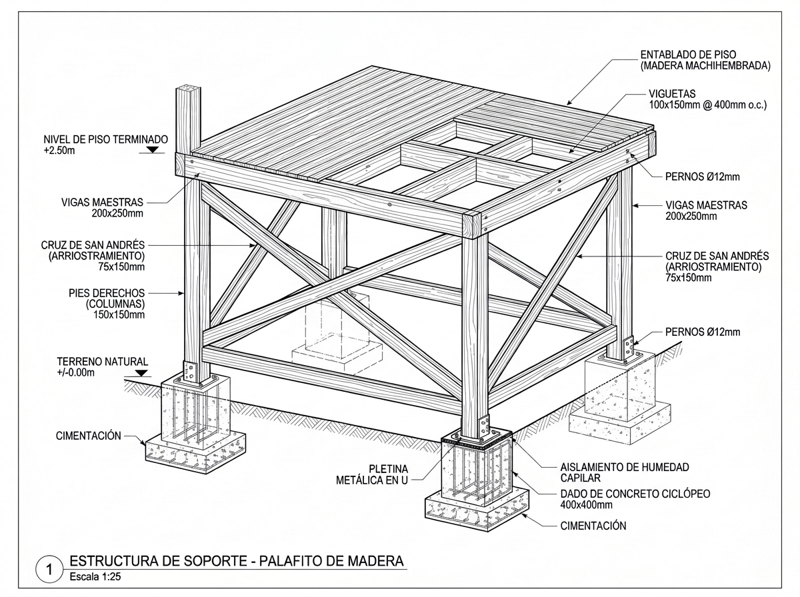
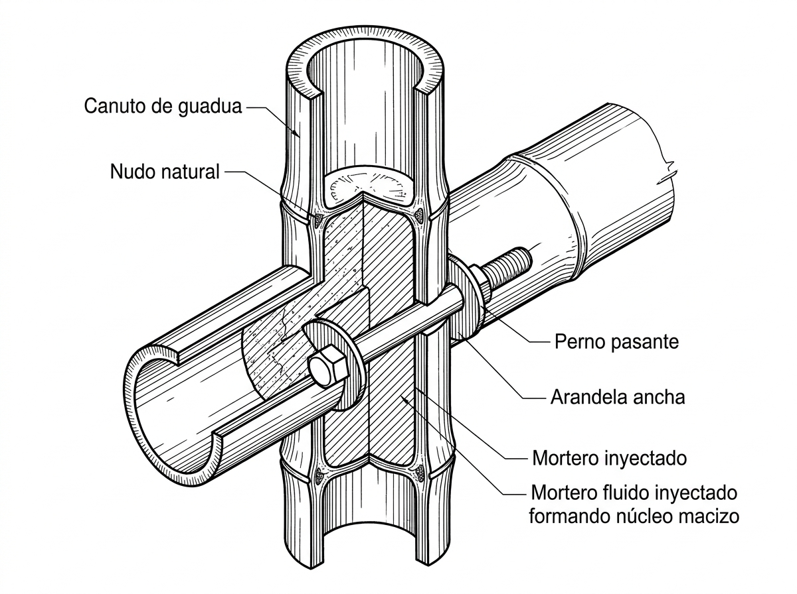

La Estructura que no se Cae: Pies Derechos y Cruces de San Andrés
NSR-10: Título G (Cap. G.4 y G.7)
"En nuestras riberas la madera es una bendición: fresca, liviana y aguantadora. Pero una casa palafítica no se cae por vieja ni porque la madera sea mala; se cae porque la armaron como una caja de fósforos floja, sin diagonales que la sostengan cuando el viento costero o el temblor la sacuden de medio lado. Hoy vamos a aprender el secreto para que su casa quede tiesa y firme para siempre."

Lámina 3.1: Despiece técnico axonométrico de una estructura palafítica en madera. Nótese el dado de concreto ciclópeo ($40\times40\text{ cm}$) con pletina en U, las columnas principales (pies derechos), vigas maestras y la Cruz de San Andrés para disipar empujes laterales de sismo y viento.
1. El Secreto de la Estabilidad: El Triángulo contra el Sismo
Si usted une cuatro maderos formando un marco cuadrado con un solo clavo en cada esquina, las cuatro esquinas actúan como bisagras sueltas. Al primer empujón lateral de un sismo o un vendaval, el cuadrado se deforma en un paralelogramo aplastado y el techo se desploma sobre la familia.
ESTRUCTURA SIN DIAGONAL ESTRUCTURA CON DIAGONAL
(Se deforma y se cae) (Triángulo rígido e indeformable)
[Carrera de Techo] [Carrera de Techo]
+-----------------+ +-----------------+
| | EMPUJE DE | \ / | EMPUJE DE
| | VIENTO O | \ / | VIENTO O
| | TEMBLOR | \ / | TEMBLOR
| | ========> | \ / | ========>
| | | / \ |
+-----------------+ | / \ |
[Solera de Piso] | / \ |
| / \ |
¡SE APLASTA DE MEDIO LADO! +-----------------+
(Las esquinas no aguantan el empuje) [Solera de Piso]
¡LAS CRUCES TRABAN EL MOVIMIENTO!
El triángulo es la única figura geométrica indeformable de la naturaleza. Cuando colocamos dos maderos en diagonal cruzados de esquina a esquina formando una "X" (Cruz de San Andrés), el marco queda bloqueado: una diagonal resiste el empuje hacia la derecha trabajando a tracción, y la otra resiste el empuje hacia la izquierda trabajando a compresión.
🔬 Laboratorio Interactivo:¿Por qué colapsa una casa sin diagonales?
SIN DIAGONALES (INESTABLE)
⚠️ ¡OJO CON ESTO, MAESTRO!
Clavar tablas de madera horizontales para la fachada NO reemplaza las diagonales. Las puntillas de forro se desprenden ante el primer latigazo sísmico. La norma NSR-10 exige como mínimo dos paredes con cruces de San Andrés en el sentido largo y dos en el sentido corto de la vivienda.
MÓDULO 3: ESTRUCTURAS EN MADERA Y PALAFITOS
Reconocimiento Sensorial de Maderas del Pacífico y Escuadrías
NSR-10: Grupos ES1, ES2, ES3
2. Nombres Locales, Identificación Táctil y Clasificación NSR-10
En el bosque pluvial del Pacífico conviven especies extraordinarias. Para la selección en obra y en aserrío, reconózcalas por sus características sensoriales, peso relativo y resistencia mecánica:
Grupo NSR-10
Especie Local
Identificación Táctil, Visual y Olfativa
Uso Estructural Recomendado
ES1 (Muy Pesadas)
Nato (Mora megistosperma)
Color rojizo a café chocolate oscuro; pesadísimo (se hunde en el agua); grano entrelazado; olor astringente a tanino. La navaja casi no penetra.
El rey de los pilotes: Inmune a la pudrición bajo fango saturado y agua salobre. Resiste la broma marina (Teredo navalis). Pilotes y vigas cargueras.
ES1 (Muy Pesadas)
Mangle (Rhizophora mangle)
Madera extremadamente dura, fibra muy densa, color pardo rojizo. Difícil de clavar sin perforación guía previa con broca.
Postes palafíticos, puntales de arriostramiento y soleras de piso expuestas a humedad salina continua en esteros.
ES2 (Pesadas)
Chanul (Humiriastrum procerum)
Color marrón amarillento a castaño; veteado fino; astillamiento elástico; peso alto pero fácil de trabajar con serrucho y cepillo.
Columnas y diagonales: Gran rigidez a flexión y compresión paralela. No se pandea con facilidad ante el empuje sísmico.
ES3 (Medias)
Cuángare (Otoba gracilipes)
Color rosado claro a canela; madera liviana a media; textura suave al tacto; clava con gran facilidad sin rajarse.
Tabiquería divisoria, forro de paredes, cielo raso y entablado de piso interior (siempre protegido de la lluvia directa).
ES3 (Medias)
Sajo / Otoba / Machare
Tonos claros, poro abierto, secado relativamente rápido para el clima de costa húmeda.
Correas de techo, divisiones ligeras no portantes y marcos de puertas y ventanas.
Capítulo G.12
Guadua (Guadua angustifolia)
Tubo hueco con nudos cada 20–35 cm. Corteza verde brillante al cosechar y pajiza al secar. Fibras exteriores ultrarresistentes a tracción.
Columnas compuestas, soleras y diagonales (siempre con canuto inyectado con mortero en uniones empernadas).
🔍 Pruebas de Campo del Madero Sano (Sin instrumentos de laboratorio)
1. Prueba de la uña / navaja: Si la uña marca con facilidad una hendidura profunda en el pilote, se trata de albura o madera blanda no apta para soporte estructural. El duramen de Nato o Chanul rechaza firmemente la hoja de corte.
2. Prueba del sonido al golpe: Golpee el madero en seco con el mango del martillo; el Nato y el Chanul sanos emiten un sonido seco y campante ("ting"), mientras que la madera picada o con pudrición interna suena opaca y hueca ("poc-poc").
2.2. Dimensiones Mínimas de Escuadría para Pies Derechos (Columnas)
Vivienda de 1 piso: Columnas de mínimo $3" \times 4"$ ($7.5 \times 10\text{ cm}$) o rollizos de diámetro no menor a 10 cm.
Vivienda de 2 pisos (primer nivel): Columnas de mínimo $4" \times 4"$ ($10 \times 10\text{ cm}$) o $4" \times 6"$ ($10 \times 15\text{ cm}$).
Separación entre columnas (intercolumnio): Máximo cada 2.50 a 3.00 metros. Entre columna y columna se colocan pies derechos secundarios de $2" \times 4"$ cada 50 o 60 cm para recibir el forro.
MÓDULO 3: ESTRUCTURAS EN MADERA Y PALAFITOS
Uniones Seguras: Clavo Liso vs. Perno Pasante con Arandela Grower
NSR-10: Título G (Cap. G.6)
3. Ensambles de Madera: Por qué NO Clavar "a Tope" Directo
Uno de los errores más peligrosos en la carpintería artesanal es unir dos maderos gruesos clavando un par de puntillas directas por fuera. Con el tiempo, la humedad ablanda la fibra, el sismo sacude la estructura y los clavos se salen como dientes flojos.
ERROR PELIGROSO: CONEXIÓN CORRECTA NSR-10:
Clavado a tope directo Perno pasante con pletina y arandela
[Carrera] [Carrera]
==================== ====================
| ^ | [Pletina en T] |
| | Clavo trabajando | o o o | Pernos pasantes
| | a extracción pura | ---O---- | con arandelas anchas
+--+--+ (¡Se desclava solo!) +--+--+ | |
| | | | O Perno |
| Pie | | Pie | | pasante |
| der | | der | o |
+-----+ +-----+ |
3.1. La Batalla Técnica: Clavo Liso vs. Perno con Arandela de Presión (Grower)
Criterio Técnico
Puntilla Lisa Tradicional
Perno Pasante de 1/2" + Arandela Grower
Mecanismo de Agarre
Fricción superficial microscópica entre el vástago liso y la fibra.
Confinamiento mecánico pasante: aprisiona todo el espesor de la madera.
Comportamiento en Sismo
El vaivén ensancha el orificio; en pocas sacudidas la fricción cae a cero y el clavo se sale solo.
Indestructible al deslizamiento: el perno trabaja a corte puro (cizalladura) y las arandelas impiden la separación.
Efecto Humedad del Pacífico
La madera saturada afloja la fibra; el clavo negro se oxida en 1 año perdiendo el 50% de su sección.
Pernos galvanizados de 1/2": corrosión mínima; la madera se hincha y contrae sin soltarse.
Función de la Arandela Grower
Inexistente.
Absorbe la contracción por secado de la madera, manteniendo la tensión para que la tuerca jamás se desenrosque con el sismo.
3.2. El Ensamble Maestro: El Rebaje o Hombro de Apoyo en Pilote
El colapso más catastrófico en palafitos ocurre cuando la viga carguera está clavada simplemente al costado del pilote sin ningún apoyo debajo:
ERROR FATAL: CORTE PURO CONEXIÓN CORRECTA: ENSAMBLE EN HOMBRO
(Falla instantánea en sismo) (La madera carga sobre la madera)
[Viga Carguera] [Viga Carguera]
+-----------+ +-----------+
| | | |
| o | <-- Clavos o pernos | O | <-- Perno pasante 1/2"
| o | aguantan TODO el | | con arandela Grower
+-----+-----------+ +-----+-----------+
| | | |///////////| <-- HOMBRO / REBAJE
| | | +===========+ (La viga descansa
| | | | sobre 2" a 3" de
| | | | madera viva del pilote)
| P | | P |
| I | | I |
| L | | L |
| O | | O |
| T | | T |
| E | | E |
+-----+ +-----+
¡EL CLAVO SE PARTE O CORTA LA FIBRA! ¡LA MADERA TRABAJA A COMPRESIÓN DIRECTA!
(La casa se cae al fango) (El perno solo mantiene la viga en su sitio)
La regla de oro del hombro: La cabeza del pilote debe rebajarse entre 5 y 7.5 cm (2" a 3") de profundidad para crear una repisa horizontal perfecta. Así, el peso de la vivienda se transmite por compresión directa sobre la fibra, donde la madera es 10 veces más resistente.
MÓDULO 3: ESTRUCTURAS EN MADERA Y PALAFITOS
Entramado de Piso, Cruces en Pilotes y Cota de Marea
DIMAR CP1-05 & NSR-10 G.11
4. El Entramado de Piso: Creando un Diafragma Rígido Horizontal
El piso del palafito amarra las cabezas de los pilotes para que se muevan juntos en el temblor. Si el piso es flexible, los pilotes vibran desfasados y parten la vivienda.
DISTRIBUCIÓN DEL ENTRAMADO DE PISO PALAFÍTICO
+---------------------------------------------+ [Pilote de esquina]
| [Viga Maestra Carguera: 4"x6" o 3"x6"] |
+=======+==============+==============+=======+
| | | | |
| | Viguetas | Viguetas | |
| | secundarias | secundarias | |
| | (2"x4" o | (Separadas | |
| | 2"x5") | 40 a 50 cm) | |
| | | | |
+=======+==============+==============+=======+
| [Viga Maestra Carguera: 4"x6" o 3"x6"] |
+---------------------------------------------+
▲ ▲
|======== Entablado clavado a 90° =========|
(Tablas de 1" fijadas con 2 clavos por vigueta para armar diafragma)
Vigas Maestras: Escuadría mínima de $3" \times 6"$ o $4" \times 6"$ (Nato o Chanul), apoyadas sobre los hombros de los pilotes.
Viguetas Secundarias: Listones de $2" \times 4"$ o $2" \times 5"$ cada 40 a 50 cm de centro a centro para evitar el pandeo o rebote al caminar.
Entablado Estructural: Tablas fijadas con al menos dos clavos de $2\frac{1}{2}"$ en cada cruce con una vigueta, armando un plano indeformable.
4.1. Cruces de San Andrés ($X$) en la Zona de Pilotes: El Freno Sísmico
Los pilotes elevados (1.5 a 2.8 m sobre el fango) actúan como patas largas flexibles. Sin diagonales, el sismo los parte por flexión en la interfase suelo-aire:
ARRIOSTRAMIENTO EN "X" ENTRE PILOTES (ZONA PALAFÍTICA)
[Viga Maestra del Piso] [Viga Maestra del Piso]
+-------------------------------------------------------+
| ^ |
| | Perno pasante 1/2" con arandela
| \ / | |
| \ / | |
| \ / | |
| \ / | |
Pilote | \ / | Perno central en cruce de "X" Pilote
de Nato | X | de Nato
(ES1) | / \ | (ES1)
| / \ | |
| / \ | |
| / \ | |
| / \ | |
+-----------------------+-------------------------------+
| | |
~~~~~~~~~~~~~~~~ Nivel de Marea Máxima (HAT +5.31 m) ~~~~~~~~~~~~~~~~
================ Nivel del Fango / Suelo Aluvial ====================
Detalles constructivos de la Cruz en pilotes: Diagonales de $2" \times 4"$ o $1.5" \times 5"$ a un ángulo entre $35^\circ$ y $55^\circ$. Pernos de 1/2" en extremos y perno central en el cruce de la "X" para evitar el pandeo por compresión. Mínimo dos crujías en X por cada fachada.
4.2. Cota de Piso con Datos de Marea (Estación CP1-05 DIMAR)
🌊 Cálculo Hidrológico de Seguridad para Limoncito y Guadualito
Integrando los datos mareográficos oficiales de la DIMAR (Vértice CP1-05 TCBUEN / Bahía de Buenaventura):
Pleamar de Sicigia (Puja media - MHWS): $+4.81\text{ m}$ sobre el datum LAT.
Marea Astronómica Máxima Extrema (HAT): $+5.31\text{ m}$ sobre el datum LAT.
Sobreelevación fluvial Río Dagua + Borde Libre: $0.50\text{ m}$ a $0.80\text{ m}$.
Cota mínima de piso terminado ($NPT_{min}$): La plataforma debe ubicarse entre 2.20 m y 2.80 m por encima del lecho de fango.
MÓDULO 3: ESTRUCTURAS EN MADERA Y PALAFITOS
Ensambles de Bambú-Guadua: La Regla del Canuto Inyectado
NSR-10: Título G (Cap. G.12)
5. La Regla de Oro: El Canuto con Mortero Inyectado (NSR-10 G.12)
La guadua (Guadua angustifolia Kunth) es hueca y tiene fibras longitudinales paralelas. Si usted pasa un perno de acero a través de un canuto vacío, el perno actúa como una cuña y raja el culmo en dos mitades con el primer temblor.
El invento sismorresistente colombiano: Inyectar una mezcla fluida de cemento y arena (1:2) dentro del canuto donde pasa el perno. Al fraguar, el mortero forma un tapón macizo indestructible que transfiere el esfuerzo al nudo.

Lámina 3.2: Corte en sección transversal del ensamble sismorresistente. Se aprecia el canuto relleno de mortero fluido 1:2 formando un núcleo macizo alrededor del perno pasante con arandelas anchas, siempre ubicado junto a un nudo natural.
PASO A PASO: LA UNIÓN INYECTADA NSR-10
Paso 1: Perforación Paso 2: Ventanilla Paso 3: Vaciado y Fraguado
NUDO NUDO NUDO
|========| |========| |========|
| | | [==] | <-- Ventanilla | #######| <-- CANUTO
| | | | de inyección | #######| RELLENO CON
| (O) | <-- Agujero de |---(O)--| <-- Perno pasante |---(O)--| MORTERO 1:2
| | perno 1/2" | | de acero | #######| (Forma un tapón
| | | | | #######| sólido macizo)
|========| |========| |========|
NUDO NUDO NUDO
5.1. Cortes Tradicionales de Acople en Guadua
CORTE "BOCA DE PESCADO" CORTE "PICO DE FLAUTA"
(Unión perpendicular a 90°) (Unión en diagonal a 45°)
/========\ /========\
/ \ / /
| NUDO | | NUDO /
\ / \ /
\ / \ /
( ) <-- Curva cóncava \ /
\ / que abraza el culmo \/ <-- Bisel plano a 45°
\========/ de la columna para diagonales
📏 Calculadora Rápida del Maestro: Distancias Seguras de Taladrado (NSR-10)
Seleccione el diámetro del perno pasante para verificar las distancias mínimas para no rajar la madera ni la guadua:
8.9 cm
Distancia al extremo libre (7 × d)
5.1 cm
Separación entre pernos (4 × d)
2.5 cm
Distancia al borde lateral (2 × d)
MÓDULO 3: ESTRUCTURAS EN MADERA Y PALAFITOS
Techos Tropicales, Verificación de Obra y Diálogo de Saberes
NSR-10 G.7 & Diálogo de Saberes
6. Techos Tropicales y Resistencia a Vientos Fuertes (NSR-10 G.7)
En el Pacífico la lluvia es continua (>6.000 mm/año) y batiente por vendavales costeros. Un techo con aleros cortos pudre las paredes en dos años o sale volando con el viento:
EL TECHO TROPICAL CON PROTECCIÓN POR DISEÑO
Láminas de zinc con clavo paraguas
y golilla de caucho EN LA CRESTA
▲
/============\============\
/ \ \
/ [Cercha en \ \
/ Pendolón] \ \
/ \ \
/ \ \
+----+------------------------+----+ \
| | [Solera Superior] | | \
| \ <--- ALERO DE SEGURIDAD
| | | | (Mínimo 80 a 120 cm)
| | | | ¡Protege la pared de madera
| | Pared protegida | | de la lluvia batiente!
| | del sol y lluvia | |
Aleros Amplios ($\ge 1.0\text{ m}$): Vuelo perimetral indispensable para impedir que el agua moje constantemente los pies derechos y cerramientos.
Flejes Anti-Huracán: Pletinas de lámina galvanizada perforada de $1\frac{1}{2}"$ que amarran la cercha a la solera superior.
Clavado en la Cresta de la Onda: El clavo paraguas con golilla de neopreno va SIEMPRE en la cresta alta, jamás en el valle donde baja el agua.
✅ Lista de Chequeo del Maestro (Antes de Entregar la Estructura)0 / 9 listos
7. Guía de Taller de Campo: Diálogo de Saberes con Carpinteros
Dinámica Práctica
Materiales de Trabajo
Objetivo Pedagógico en Comunidad
1. Reconocimiento Sensorial
Probetas de Nato, Chanul, Cuángare, Mangle y Guadua.
Diferenciar densidad, prueba de uña/navaja, sonido de golpe y duramen vs. albura.
2. Batalla de Ensambles
2 listones clavados con puntilla vs. 2 listones con perno 1/2" y arandela Grower.
Demostración física del descalce por vibración cíclica de sismo vs. la firmeza del perno bloqueado.
3. Laboratorio del Triángulo
Marco cuadrado articulado con clavos en esquinas + diagonales desmontables.
Ver cómo el paralelogramo colapsa con un dedo y cómo la "X" bloquea el movimiento en ambos sentidos.
4. Mesa de Vocabulario Local
Cuaderno de campo y pizarra comunitaria.
Registrar los términos vernáculos ribereños del río Dagua para retroalimentar el manual.